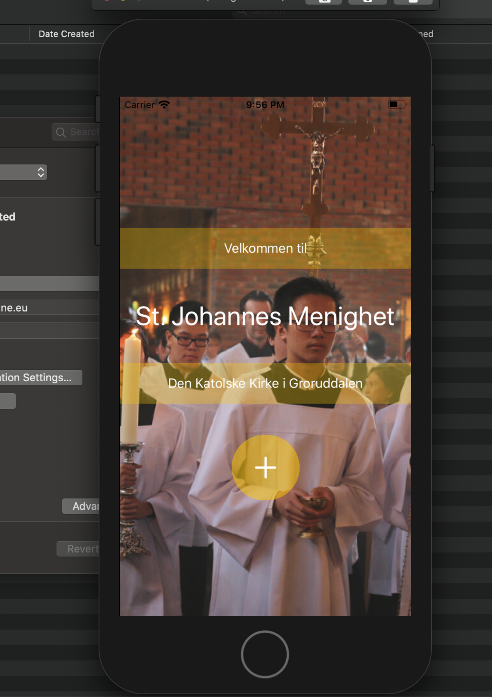

As a web developer, I have been part of a two months project contributing to the development of an online shop using Wordpress. |
|
I am developing an mobile app for the Pastoral Department of the Catholic Church in Oslo both using Swift and Kotlin. |
 |
I have experience designing logos, thumbnails, posters and designs for weddings. |